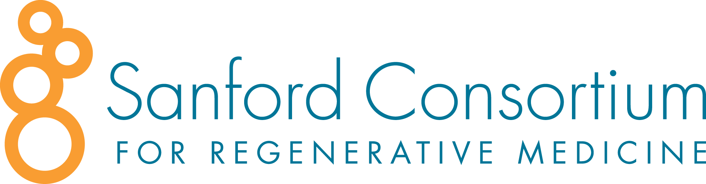
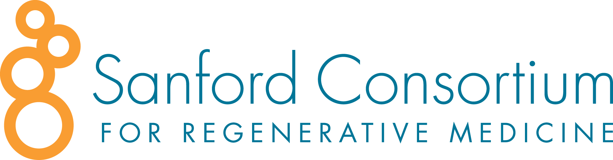
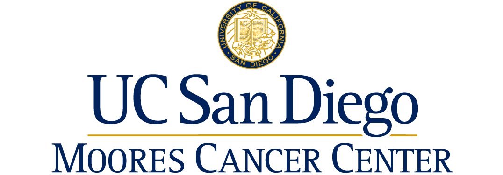
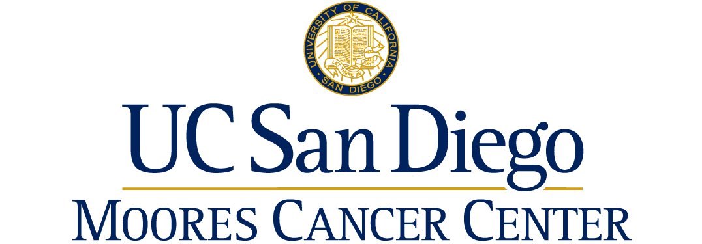
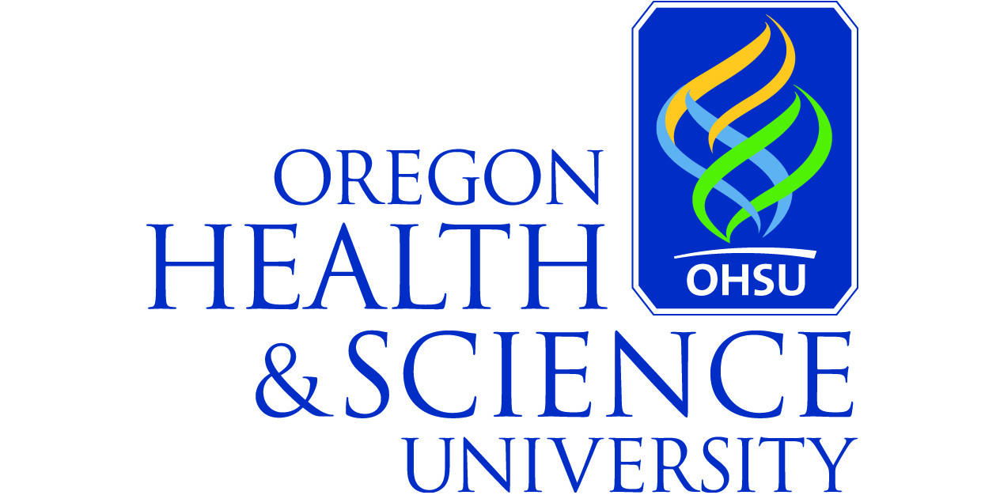
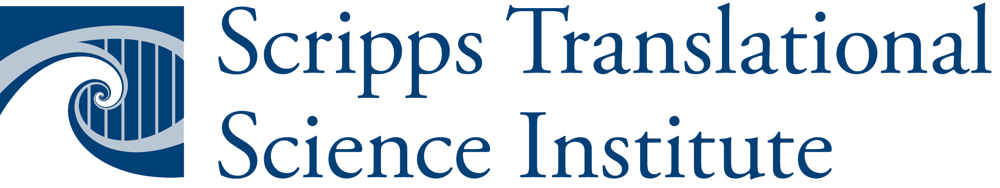
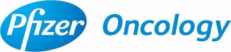
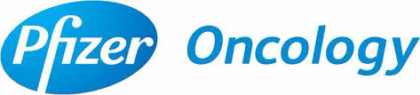

Computational Cancer Analysis Laboratory
at The Center for Novel Therapeutics and Moores Cancer Center
We are a team of Cancer Researchers and Computational Biologists working on Cancer Classification, Target Discovery and Precision Oncology.
Projects and Collaborations
Below are our many ongoing projects and collaborations around our general framework to functionally delineate oncogenic states. These are understood as a defined set of specific and coordinated patterns of aberrant activation/deregulation of signaling pathways, and downstream effectors and transcriptional programs, including the tumor stroma and immune microenvironment, which result in similar phenotypic characteristics and cell vulnerabilities to genetic or pharmacological perturbations. Following this functional approach we use computational and experimental methodologies to define oncogenic states and provide a more accurate biological context, and molecular phenotypes, to guide cancer modeling, classification and to more effectively match therapies to individual cancer samples using a novel functional evidence-based paradigm for Precision Oncology. As part of our work we develop computational algorithms, tools, and software environment and make them available to the Cancer Research community.
UCSD Center for Cancer Target Discovery and Development (CTD2)

 


We are part of the National Cancer Institute’s CTD2 Network comprised of 12 research teams that work independently as well as collaboratively as a “Network”. The UCSD CTD2 Center (NIH U01CA217885) incorporates teams from 7 UCSD laboratories and aims to identify oncogenic cell states, characterize their most salient genomic and immune hallmarks and infer optimal combinations of pharmacological and immunological agents. These studies will lead to the development of novel treatment strategies and provide the foundation for a new generation of more comprehensive, functional-based, precision oncology approaches.
Director and Lead PI.
Pablo Tamayo, Ph.D. Professor of Medicine, Division of Medical Genetics, UCSD
Co-Director
William Kim, Ph.D. Assistant Professor of Medicine, Division of Medical Genetics, UCSD
Principal Investigators / Collaborators
Jill Mesirov, Ph.D. Professor of Medicine, Associate Vice-Chancellor, Computational Health Sciences, UCSDEzra Cohen, M.D. Professor of Medicine, Co-Director, Center for Precision Immunology, UCSD
Dan Kaufman, M.D. Ph.D. Professor of Medicine, Division of Regenerative Medicine, Director of Cell Therapy, UCSD
Judy Varner, Ph.D. Professor of Pathology, UCSD
Silvio Gutkind, Ph.D. Professor of Pharmacology, UCSD, Associate Director Basic Science (MCC)
Stephen Schoenberger, Ph.D. Professor, Co-Director, Center for Precision Immunology, La Jolla Institute
External Collaborators
William Hahn (Dana Farber), Stuart Schreiber (Broad Institute), Paul Clemons (Broad Institute), Hanlee Ji (Stanford)Gordon Mills (OHSU), Jeff Tyner (OHSU), and Matt Reyna (Emory)
CCAL Team
Kwat Medetgul-ErnarStephanie Ting
Kate Niklason
Emily Addleson

California Initiative to Advance Precision Medicine (CIAPM) UCSD Celsus Project
 

This project, supported by a CIAPM award, brings together a team of dedicated people across many disciplines to create a powerful, flexible and fully integrated platform for exploring new therapeutic opportunities and precision medicine capabilities. Initially targeting Hispanic TNBC patients, this project will implement a novel collaborative working model for researchers, clinicians, patients, and stakeholders, as well as a research component. The models developed by this effort will be used for novel therapeutic discovery, preclinical validation and to recommend therapeutics strategies for TNBC Hispanic patients.
Lead PI’s
William Kim, Ph.D. Assistant Professor of Medicine, Division of Medical Genetics, UCSPablo Tamayo, Ph.D. Professor of Medicine, Division of Medical Genetics, UCSD
Principal Investigators
Barbara Parker, M.D. Sr. Deputy Director Cancer Medicine, MCC, and Professor of Medicine, UCSDJill Mesirov, Ph.D. Professor of Medicine, Associate Vice-Chancellor, Computational Health Sciences, UCSD
Elena Martinez, Ph.D. Professor of Family Medicine and Public Health, Associate Director, Population Sciences, Community Outreach and Engagement, MCC, UCSD
Rebecca Shatsky, M.D. Assistant Professor of Medicine, UCSD
Warren Paroly, M.D. Medical Oncologist, Tri-City Medical Center
Hasnat Ahmed, M.D. Medical Oncologist, El Centro Regional Medical Center
Jesse Nodora, Ph.D. Associate Professor of Family Medicine and Public Health, UCSD
Alfredo Molinolo, M.D., Ph.D. Director, MCC Biorepository, Professor of Pathology, UCSD
James Murphy, M.D., Ph.D. Associate Professor of Radiation Oncology, UCSD
Key Personnel / Collaborators
Robert Wechsler-Reya, Ph.D. Professor, Director, Tumor Initiation & Maintenance, SBP Medical Institute, Director, Center for Neuro-Oncology and Genomics, Rady’s Children HospitalEran Andrechek, Ph.D. Associate Professor, Dept. of Physiology, Michigan State University
Corinne Davidson, Ph.D. Director, Inst. for Public Health, San Diego State Univ.
Adrian Daneri-Navarro, M.D, Ph.D. Professor, Department of Physiology, University of Guadalajara, Mexico
Ludmil Alexandrov, Ph.D. Assistant Professor, Cellular and Molecular Medicine, UCSD
Helen Palomino, LCSW. CEO, Cancer Resource Center of the Desert
Nicole Howard, MPH, Executive Vice President Health, Quality Partners
Bryce Olson, Cancer Patient and Advocate
Sara Fainstein, Cancer Survivor and Advocate
Kay Clark, Health Systems Manager at American Cancer Society
Advisors / Supporters
Christian Tomaszweski, M.D., MBA. Chief Medical Officer, El Centro Regional Medical CenterScott Lippman, M.D. Director, Moores Cancer Center. Associate Dean for Cancer Research and Care
Geoff Wahl, Ph.D. Professor, Salk Institute
Jing Yang, Ph.D. Associate Professor of Pharmacology and Pediatrics, UCSD
Judy Varner, Ph.D. Professor of Pathology, UCSD
Jadwiga Bienkowska, Ph.D. Head of Computational Biology, Pfizer Oncology
Silvio Gutkind, Ph.D. Professor of Pharmacology, UCSD, Associate Director Basic Science (MCC)
Trey Ideker, Ph.D. Professor of Medicine, UCSD. Director, San Diego Center for Systems Biology
Ezra Cohen, M.D. Professor of Medicine, Co-Director, Center for Precision Immunology, UCSD
Stephen Schoenberger, Ph.D. Professor, Co-Director, Center for Precision Immunology, La Jolla Institute
Hanlee Ji, M.D. Associate Professor of Medicine, Stanford University
Razelle Kurzrock, M.D. Professor of Medicine, Director, Center for Personalized Medicine, UCSD
Paul Clemons, Ph.D. Director, Computational Chemical Biology, Broad Institute
Kun Zhang, Ph.D. Professor of Bioengineering, UCSD
Manuela Gago, M.D., Ph.D. Galician Foundation of Genomic Medicine, Santiago de Compostela, Spain
CCAL Team
Xiaojun Max XuKwat Medetgul-Ernar
Emily Addleson

GSEA/MSigDB and GenePattern Development (Mesirov Lab Collaboration)


The goal of this project is to build on GenePattern’s foundation to provide GenePattern Notebook, a beginning-to-end computational electronic lab notebook environment for combining analysis and text.
Supporting and evolving Gene Set Enrichment Analysis and the Molecular Signatures Database for cancer research
(NIH U24CA220341).The goal of this proposal is to continue to evolve and add value to the GSEA/MSigDB resource to best address the needs of the cancer research community.
Decomposing Molecular Signatures DataBase (MSigDB) Gene Sets to Extract More Coherent and Specific Cellular Signatures and Hallmarks
The goal of this project is to develop the next generation of hallmark gene sets. This new collection will add value by providing more coherent and better representation of the biological processes and subprocesses that are often inherent in MSigDB gene sets.
Principal Investigators
Jill Mesirov, Ph.D. Professor of Medicine, Associate Vice-Chancellor, Computational Health Sciences, UCSDPablo Tamayo, Ph.D. Professor of Medicine, Division of Medical Genetics, UCSD
Project Manager
Helga Thorvaldsdóttir (Mesirov Lab)CCAL Team
Kwat Medetgul-ErnarKate Niklason
Xiaojun (Max) Xu
Gene Pattern Team
Peter CarrMichael Reich
David Eby
Thorin Tabor
Barabara Hill
Ted Liefeld
Edwin Juarez
Moores Cancer Center Genomics and Computational Biology Shared Resource (GCBSR)
The Moores Cancer Center component of the GCBSR, supported by an NIH CCSG grant, provides no cost support to MCC investigators with a variety of cancer genomics downstream analyses and training including: cancer variant analysis, gene expression profiling, biomarker discovery, epigenomic analyses, systems biology, gene set enrichment analysis, matrix decomposition, and many other advanced cancer genomics analysis tools.
Co-Director (MCC GCBSR)
Pablo Tamayo, Ph.D. Professor of Medicine, Division of Medical Genetics, UCSDCCAL Team
Kwat Medetgul-ErnarStephanie Ting
Kate Niklason
Xiaojun (Max) Xu

Prostate Cancer Precision Medicine Project

This project brings together a team of dedicated people across many disciplines to create a powerful, flexible and fully integrated platform for exploring new therapeutic opportunities and precision medicine capabilities for Prostate Cancer. nitially targeting Hispanic TNBC patients, this project will implement a novel collaborative working model for researchers, clinicians, patients, and stakeholders, as well as a research component. The models developed by this effort will be used for novel therapeutic discovery, preclinical validation and to recommend therapeutics strategies for prostate patients.
Project Leaders
William Kim, Ph.D. Assistant Professor of Medicine, Division of Medical Genetics, UCSPablo Tamayo, Ph.D. Professor of Medicine, Division of Medical Genetics, UCSD
Ludmil Alexandrov, Ph.D. Assistant Professor, Cellular and Molecular Medicine, UCSD
Rana McKay, MD Medical Oncologist, Assistant Professor of Medicine, UCSD
Ida Deichaite, PhD Director, Industry Relations, Moores Cancer Center, UCSD
Katie Vaughan, Research Analyst, Translational Oncology, Moores Cancer Center, UCSD
Gordon Mills, M.D., Ph.D. Director of Precision Oncology, OHSU Knight Cancer Institute
Professor, Cell, Developmental and Cancer Biology OHSU
CCAL Team
Xiaojun (Max) XuKwat Medetgul-Ernar

Oncogenic State Projects

Oncogenesis and the CNA Signature of Cyclin E1 (Reed Lab)
GPCR-driven cellular states (Gurkind Lab)
The PKA-MET cellular state (Gutkind Lab)
KIT resistance states in GIST (Sicklick Lab)
Platinum-based drug resistance states (Harismendy and Howell Labs)
SDH- driven cancers (Sicklick Lab)
An AR/EGFR driven State in desmoplastic small round cell tumors (DSRCT) sarcomas (Husain Lab)
Cellular states in glioma and meningiomas (Rich Lab)
The GNAQ activation state in uveal melanoma (Gutkind Lab)
Liver Cancer Cellular States and NRF2 (Burgoyne, Hui and Durden Labs)
Methylation-based oncogenic states in myelodysplasia (Bejar Lab)
Molecular portfolios across hematologic malignancies (Galanina Lab)
HPV+ oncogenic states (Califano, Cohen and Gutkind Labs)
Metformin sensitivity state (Gutkind)
Oncogenic states in TNBC (Harismendy Lab)
Project Leaders
William Kim, Ph.D. Assistant Professor of Medicine, Division of Medical Genetics, UCSPablo Tamayo, Ph.D. Professor of Medicine, Division of Medical Genetics, UCSD
Ludmil Alexandrov, Ph.D. Assistant Professor, Cellular and Molecular Medicine, UCSD
Rana McKay, MD Medical Oncologist, Assistant Professor of Medicine, UCSD
Ida Deichaite, PhD Director, Industry Relations, Moores Cancer Center, UCSD
Katie Vaughan, Research Analyst, Translational Oncology, Moores Cancer Center, UCSD
Gordon Mills, M.D., Ph.D. Director of Precision Oncology, OHSU Knight Cancer Institute
Professor, Cell, Developmental and Cancer Biology OHSU
CCAL Team
Kwat Medetgul-ErnarStephanie Ting
Xiaojun (Max) Xu
Kate Niklason
Emily Addleson

Immuno-Oncology Projects


Precision Immunotherapy (Cohen and Schoenberger Labs)
Stimulation Neo-Antigen Specific T Cell Responses in Head and Neck Cancers (Cohen and Schoenberger Labs, NIH 1U01DE028227)
Novel Tumor Targets that Mediate NK Cell Activity (Kaufman Lab)
The immunosuppressive environment of the PKA-MET Oncogenic state (Gutkind Lab)
Macrophage Differentiation (Kaufman Lab)
Targeting the immunosuppressive Syk-PI3Kγ-HIF axis (Durden Lab)
Tumor innate immunity and endogenous retroviruses (Barbie Lab)
Signatures of PD-L1 immune response (Bhanot Lab)
APOBEC-related mutagenesis and neo-peptide hydrophobicity (Kurzrock Lab)
Principal Investigators
William Kim, Ph.D. Assistant Professor of Medicine, Division of Medical Genetics, UCSPablo Tamayo, Ph.D. Professor of Medicine, Division of Medical Genetics, UCSD
Ezra Cohen, M.D. Professor of Medicine, Co-Director, Center for Precision Immunology, UCSD
Dan Kaufman, M.D. Ph.D. Professor of Medicine, Division of Regenerative Medicine, Director of Cell Therapy, UCSD
Judy Varner, Ph.D. Professor of Pathology, UCSD
Razelle Kurzrock, M.D. Professor of Medicine, Director, Center for Personalized Medicine, UCSD
Don Durden, MD, Ph.D. Professor, Division of Pediatric Hematology/Oncology, University of Nebraska and UCSD
Silvio Gutkind, Ph.D. Professor of Pharmacology, UCSD, Associate Director Basic Science (MCC)
Stephen Schoenberger, Ph.D. Professor, Co-Director, Center for Precision Immunology, La Jolla Institute
David Barbie, MD, Assistant Professor, Harvard Medical School and Dana Farber Cancer Institute
Gyan Bhanot, Ph.D. Professor of Molecular Biology and Biochemistry; and Department of Physics School of Arts and Sciences Rutgers, The State University of New Jersey
CCAL Team
Kwat Medetgul-ErnarComputational Method Development Projects
 



Molecular signatures & systems biology networks (Ideker Lab)
Dynamic cellular and molecular changes associated with clinical response (Pfizer and Samsung Medical Center)
Modelling bistable tumour population dynamics to design effective treatment strategies (Yeang lab)
Mathematical and computational models to study the behavior of signaling networks (Stites Lab)
Principal Investigators
Trey Ideker, Ph.D. Professor of Medicine, UCSD. Director, San Diego Center for Systems BiologyKun Zhang, Ph.D. Professor of Bioengineering, UCSD
Prashant Mali, Ph.D. Assistant Professor Bioengineering, UCSD
Chen-Hsiang Yeang, Ph.D. Associate Research Fellow, Institute of Statistical Science, Academia Sinica, Taiwan
Zhengyan (George) Kan, Ph.D. Computational Biology, Pfizer Oncology
Edward Stites, MD Ph.D. Assistant Professor, Integrative Biology Laboratory, Salk Institute
William Kim, Ph.D. Assistant Professor of Medicine, Division of Medical Genetics, UCSD
Pablo Tamayo, Ph.D. Professor of Medicine, Division of Medical Genetics, UCSD
CCAL Team
Kwat Medetgul-ErnarCancer Cell Map Initiative Collaboration
Principal Investigators
Trey Ideker, Ph.D. Professor of Medicine, UCSD. Director, San Diego Center for Systems BiologyNevan Krogan
Key Personnel
Pablo Tamayo, Ph.D. Professor of Medicine, Division of Medical Genetics, UCSDJill Mesirov, Ph.D. Professor of Medicine, Associate Vice-Chancellor, Computational Health Sciences, UCSD
CCAL Team
Kwat Medetgul-ErnarFunctional Characterisation of Circular RNA (UCSD/Monash University Collaboration)
Principal Investigators
Joseph Rosenbluh, Ph.D. Associate Professor, Department of Biochemistry and Molecular Biology, Monash UniversityDirector of the Functional Genomics Platform at the Hudson Institute of Medical Research.
William Kim, Ph.D. Assistant Professor of Medicine, Division of Medical Genetics, UCSD
Pablo Tamayo, Ph.D. Professor of Medicine, Division of Medical Genetics, UCSD
Jill Mesirov, Ph.D. Professor of Medicine, Associate Vice-Chancellor, Computational Health Sciences, UCSD